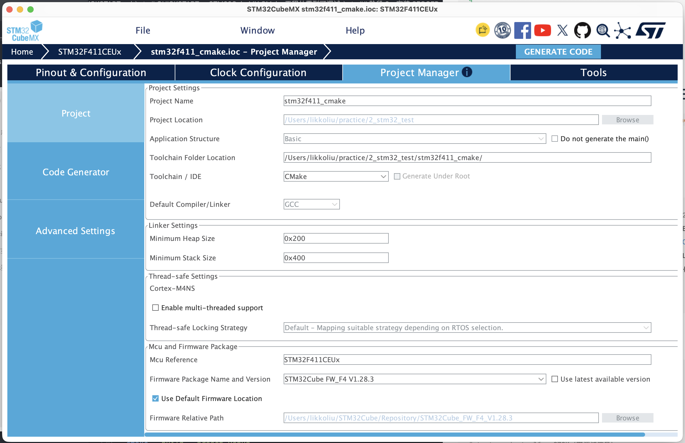
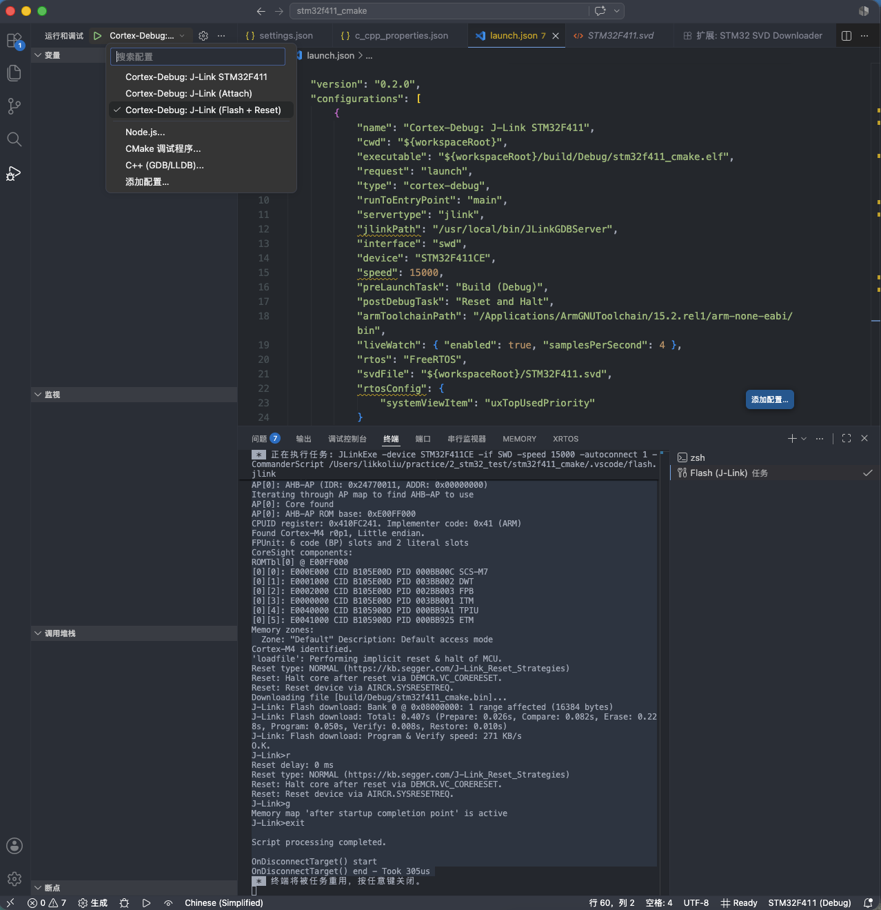
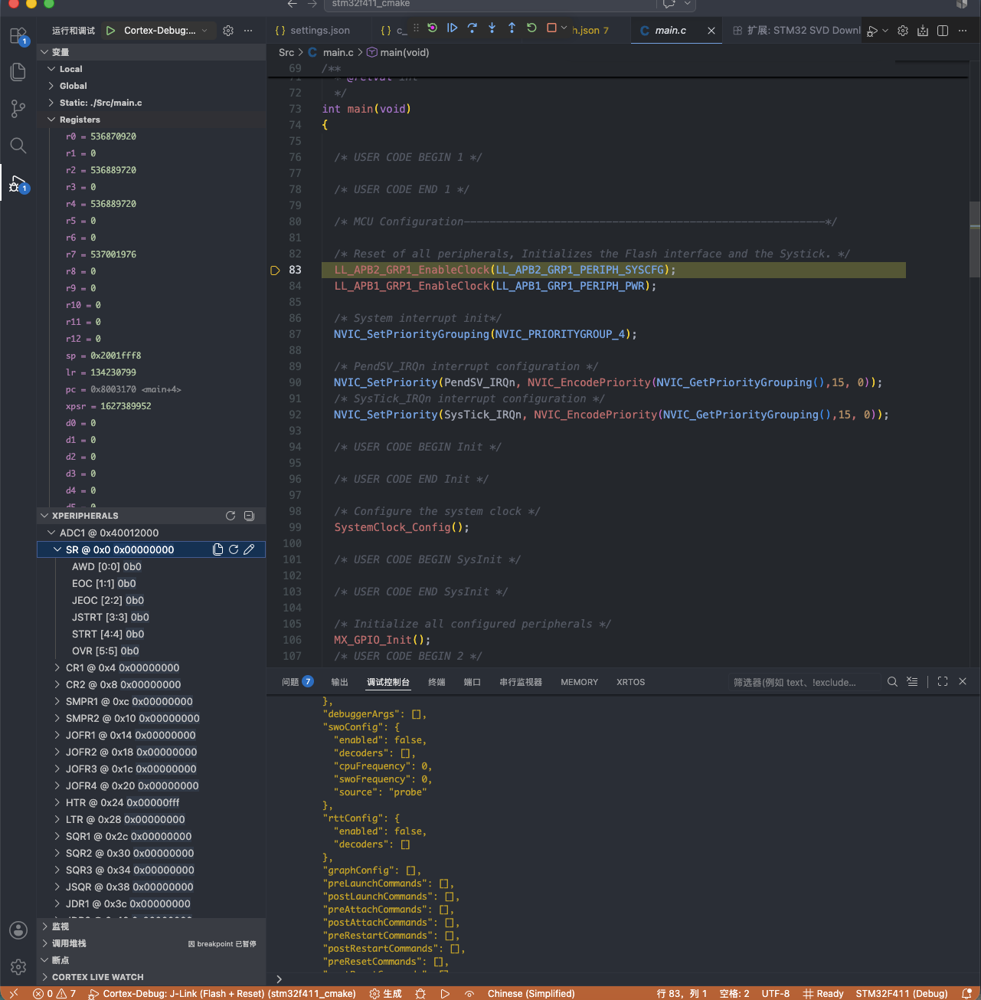

0. 背景
经历了之前使用 STM32CubeIDE for VSCode 进行 STM32 开发，使用该插件直接在 VSCode 中通过 ST-Link / J-Link 对 STM32 目标板进行 Debug，实现就和 Keil5 一样的效果（外设及特殊处理寄存器信息、堆栈信息等都可以选择查看）。后续又探索出在 macOS 中仅用 VSCode 编辑器 + ARM 工具链，配合 J-Link 调试器进行 STM32 开发的方法，该方法与使用 STM32CubeIDE for VSCode 相比优点在于更灵活可控。
依赖：
- 一块 STM32 开发板 + J-Link 调试器（J-Link-OB 的板子也行；本文未覆盖 ST-Link / OpenOCD 路径）
- STM32CubeMX（用于生成 CMake 工程；下载需 ST 账号）
1. 工具链
1.1 ARM 工具链
安装交叉编译工具 gcc-arm-embedded，其自带 GCC 15.2.1 + binutils + GDB + newlib。
1 | brew install --cask gcc-arm-embedded |
验证：
1 | arm-none-eabi-gcc --version |
1.2 调试工具
安装 SEGGER J-Link 软件及驱动。
1 | brew install --cask segger-jlink |
验证：
1 | which JLinkExe JLinkGDBServer |
1.3 构建工具
1 | brew install cmake ninja |
验证：
1 | cmake --version # 期望 >= 3.22 |
2. 工程新建及初始编译验证
- 打开 STM32CubeMX；
- 选择芯片型号；
- 配置引脚、时钟、外设；
- Project Manager 设置：
- Toolchain / IDE: 选择 CMake
- Project Location: 选择你的工作目录
- 点击 Generate Code；
- 在 VS Code 中打开生成的项目文件夹。

* Project Manager 设置示意
注意：在配置时，先勿勾选低功耗配置，即将所有引脚配置为模拟模式，这样将会失能掉 SWD 功能，导致后续在调试时无法正常进行，仅能重新擦除芯片 flash 进行恢复。
CubeMX 生成的 CMake 默认只产 .elf，烧录用的 .bin 和 .hex 需要手动加。 主 CMakeLists.txt 文件末尾的 target_link_libraries 之后，追加：
1 | # Generate .hex and .bin for flashing |
验证：
1 | cmake --preset Debug |
期望：
1 | likkoliu@likkodeMacBook-Pro stm32f411_cmake % cmake --preset Debug |
3. vscode 集成
3.1. 必要扩展
cortex-debug— ARM GDB 调试入口cmake-tools— CMake 集成（识别 CMakePresets.json）
3.2. 配置文件
本工程下配置 cortex-debug、cmake-tools
编辑 .vscode/settings.json
1 | { |
编辑 .vscode/c_cpp_properties.json
1 | { |
配置 J-Link + FreeRTOS 感知
编辑 .vscode/launch.json
1 | { |
创建自定义任务
编辑.vscode/tasks.json
1 | { |
烧录脚本
编辑 .vscode/flash.jlink
1 | // J-Link Commander script: flash stm32f411_cmake.bin to STM32F411 |
复位脚本
编辑.vscode/reset.jlink
1 | // J-Link Commander script: halt and reset target |
4. 编译验证
在 vscode 中打开工程文件夹
- ⇧⌘P → Developer: Reload Window
- ⇧⌘P → Tasks: Run TaskCMake → Clean build（清理旧缓存）
- ⇧⌘P → Tasks: Run TaskCMake → Build (Debug)
期望：
1 | * 正在执行任务: rm -rf build |
5. 烧录调试
烧录
- 连接 J-Link 及其目标开发板
- ⇧⌘P → Tasks: Run TaskCMake → Flash (J-Link)
期望：
1 | CommanderScript /Users/likkoliu/practice/2_stm32_test/stm32f411_cmake/.vscode/flash.jlink |
调试
下载目标芯片对应的 .svd 文件（用于在调试时查看外设寄存器），可通过 ST 官网下载，也可通过 VSCode 扩展 STM32 SVD Downloader 下载。
下载完成后将其地址填入 launch.json 文件配置中。
1 | { |
- 连接 J-Link 及其目标开发板
- ⇧⌘D 顶部下拉菜单选
Cortex-Debug: J-Link (Flash + Reset)开始调试

* debug 入口示意
期望现象：
- 调试工具栏出现（▶ ❚❚ ▶▶ 等按钮）
- 左侧 VARIABLES 面板显示当前作用域变量
- 底部状态栏变橙色（调试中）
- 源代码
main()那一行高亮（停在那里）

* debug 示意
6. 参考
6.1 工具链
- Arm GNU Toolchain — 本文使用的
arm-none-eabi-gcc 15.2.1出处 - SEGGER J-Link — J-Link 调试器及
JLinkGDBServerCLExe来源 - CMake / Ninja — 构建系统
6.2 工程生成
- STM32CubeMX — 图形化配置 + 一键生成 CMake 工程
6.3 VSCode 集成
- cortex-debug — ARM GDB 调试入口，支持 J-Link / ST-Link / OpenOCD
- CMake Tools — CMake 集成，识别
CMakePresets.json - C/C++ Extension Pack —
c_cpp_properties.json来源
6.4 调试
- CMSIS SVD 规范 —
.svd文件格式 - FreeRTOS — RTOS 参考；cortex-debug 的 RTOS 感知基于此